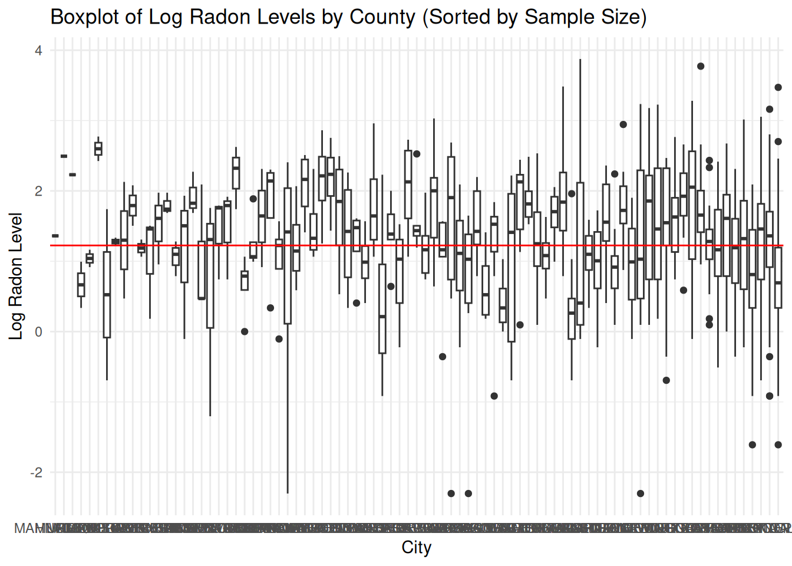

library(tidyverse)
library(arm)
library(readr)
library(lme4)
library(stringr)2 Modelos Lineales Multinivel básicos
2.1 Pooling completo vs no-pooling
Carga de datos de radon y depuración:
radon <- read_delim('./data/ARM_Data/radon/srrs2.dat',trim_ws = TRUE)Rows: 12777 Columns: 25
── Column specification ────────────────────────────────────────────────────────
Delimiter: ","
chr (11): state, state2, zip, basement, rep, wave, starttm, stoptm, startdt,...
dbl (13): idnum, stfips, region, typebldg, floor, room, stratum, activity, p...
lgl (1): windoor
ℹ Use `spec()` to retrieve the full column specification for this data.
ℹ Specify the column types or set `show_col_types = FALSE` to quiet this message.radon_data <- radon %>%
filter(state == "MN") %>%
mutate(
radon = activity,
log_radon = log(if_else(activity == 0, 0.1, activity)),
floor = floor, # 0 for basement, 1 for first floor
county_name = as.vector(county)
) %>%
group_by(county_name) %>%
mutate(
county = cur_group_id()
) %>%
ungroup()Boxplot de los niveles de radon por ciudad:
mean_radon <- mean(radon_data$log_radon, na.rm = TRUE)
ggplot(radon_data, aes(x = county_name, y = log_radon)) +
geom_boxplot() +
geom_abline(intercept = mean_radon, slope = 0, color = "red") +
labs(title = "Boxplot of Log Radon Levels by City",
x = "City",
y = "Log Radon Level") +
theme_minimal()Boxplot de los niveles de radon por ciudad ordenados por tamaño de muestra:
tabla_ns <- radon_data %>% group_by(county_name) %>% summarise(n = n())
radon_data <- radon_data %>%
left_join(tabla_ns, by = "county_name")
radon_data <- radon_data %>%
mutate(county_name = factor(county_name, levels = tabla_ns$county_name[order(tabla_ns$n)]))
ggplot(radon_data, aes(x = county_name, y = log_radon)) +
geom_boxplot() +
geom_abline(intercept = mean_radon, slope = 0, color = "red") +
labs(title = "Boxplot of Log Radon Levels by County (Sorted by Sample Size)",
x = "City",
y = "Log Radon Level") +
theme_minimal()
Boxplot de los niveles de radon por ciudad usando partial-pooling (Multinivel):
lmer_radon <- lmer(log_radon ~ 1 + (1|county_name), data = radon_data)
radon_data <- radon_data %>%
mutate(log_radon_pred = predict(lmer_radon))
ggplot(radon_data, aes(x = county_name, y = log_radon_pred)) +
geom_boxplot() +
geom_abline(intercept = mean_radon, slope = 0, color = "red") +
labs(title = "Boxplot of Log Radon Levels by City (Predicted)",
x = "City",
y = "Log Radon Level (Predicted)") +
theme_minimal()Pooling completo vs no-pooling con una covariable:
muestra_counties <- c('LAC QUI PARLE', 'AITKIN','KOOCHICHING',
'DOUGLAS','CLAY','STEARNS','RAMSEY','ST LOUIS')
radon_data_r <- radon_data %>% mutate(county_s = as.character(county_name)) %>%
filter(county_s %in% muestra_counties)
regresion_pooling <- lm(log_radon ~ floor, data = radon_data_r)
regresion_no_pooling <- lm(log_radon ~ -1+floor+county_name, data = radon_data_r)
coef_df <- coef(regresion_no_pooling)
coef_data <- data.frame(
county_s = sub("county", "", names(coef_df)[grep("county", names(coef_df))]),
slope = coef_df[grep("floor", names(coef_df))],
intercept = coef_df[grep("county", names(coef_df))]
)Warning in data.frame(county_s = sub("county", "",
names(coef_df)[grep("county", : row names were found from a short variable and
have been discardedradon_data_r <- radon_data_r %>%
left_join(coef_data, by = "county_s")
ggplot(data = radon_data_r) +
geom_point(aes(x = floor, y = log_radon)) +
geom_abline(aes(intercept = intercept, slope = slope), color = "blue") + # Specific regression lines for each county
geom_abline(intercept = coef(regresion_pooling)[1], slope = coef(regresion_pooling)[2], color = "red") + # General regression line
facet_wrap(~county_s) +
labs(title = "Radon Levels by Floor with Specific and General Regression Lines",
x = "Floor",
y = "Log Radon Level") +
theme_minimal()Warning: Removed 209 rows containing missing values or values outside the scale range
(`geom_abline()`).
Pooling parcial con una covariable (Multinivel):
lmer_radon_floor <- lmer(log_radon ~ floor + (1|county_name),
data = radon_data_r)
fixed_effect <- fixef(lmer_radon_floor)
random_effects <- ranef(lmer_radon_floor)$county
coef_data_lmer <- data.frame(
county_s = rownames(random_effects),
intercept_lmer = fixed_effect[1] + random_effects[, 1],
slope_lmer = fixed_effect[2]
)Warning in data.frame(county_s = rownames(random_effects), intercept_lmer =
fixed_effect[1] + : row names were found from a short variable and have been
discardedradon_data_r <- radon_data_r %>%
left_join(coef_data_lmer, by = "county_s")
ggplot(data = radon_data_r) +
geom_point(aes(x = floor, y = log_radon)) +
geom_abline(aes(intercept = intercept_lmer, slope = slope_lmer), color = "blue") + # Specific regression lines for each county
geom_abline(intercept = fixed_effect[1], slope = fixed_effect[2], color = "red") + # General regression line (fixed effects only)
facet_wrap(~county_s) +
labs(title = "Radon Levels by Floor with Specific and General Regression Lines",
x = "Floor",
y = "Log Radon Level") +
theme_minimal()2.2 Modelo multinivel (pooling parcial)
Modelo con intercepto variable por condado y piso
M1 <- lmer (log_radon ~ floor + (1 | county_name),data = radon_data)
display (M1)lmer(formula = log_radon ~ floor + (1 | county_name), data = radon_data)
coef.est coef.se
(Intercept) 1.46 0.05
floor -0.69 0.07
Error terms:
Groups Name Std.Dev.
county_name (Intercept) 0.33
Residual 0.76
---
number of obs: 919, groups: county_name, 85
AIC = 2179.3, DIC = 2156
deviance = 2163.7 Coeficientes estimados de regresion
coef (M1)$county_name
(Intercept) floor
MAHNOMEN 1.4456250 -0.6929937
MURRAY 1.6253581 -0.6929937
WILKIN 1.5835784 -0.6929937
COOK 1.2432992 -0.6929937
FILLMORE 1.4409443 -0.6929937
LAC QUI PARLE 1.8680900 -0.6929937
MILLE LACS 1.2995480 -0.6929937
POPE 1.4116740 -0.6929937
ROCK 1.4170797 -0.6929937
STEVENS 1.5520593 -0.6929937
YELLOW MEDICINE 1.3862294 -0.6929937
BECKER 1.4792143 -0.6929937
BIG STONE 1.4801817 -0.6929937
DODGE 1.5840333 -0.6929937
ISANTI 1.3149878 -0.6929937
KITTSON 1.5015319 -0.6929937
NOBLES 1.6300755 -0.6929937
NORMAN 1.3820836 -0.6929937
PENNINGTON 1.3246513 -0.6929937
RENVILLE 1.5338618 -0.6929937
TODD 1.5530274 -0.6929937
WATONWAN 1.9060483 -0.6929937
AITKIN 1.1915003 -0.6929937
BENTON 1.4461503 -0.6929937
BROWN 1.6827736 -0.6929937
CHIPPEWA 1.5771520 -0.6929937
CLEARWATER 1.4024982 -0.6929937
COTTONWOOD 1.3723633 -0.6929937
KANABEC 1.3646863 -0.6929937
KANDIYOHI 1.7197951 -0.6929937
LAKE OF THE WOODS 1.6303574 -0.6929937
LINCOLN 1.8260565 -0.6929937
NICOLLET 1.7641694 -0.6929937
PIPESTONE 1.6303984 -0.6929937
POLK 1.5675867 -0.6929937
SIBLEY 1.3673371 -0.6929937
SWIFT 1.2574762 -0.6929937
TRAVERSE 1.6938491 -0.6929937
WASECA 1.0944377 -0.6929937
CASS 1.4322449 -0.6929937
HUBBARD 1.3467692 -0.6929937
JACKSON 1.7329563 -0.6929937
LE SUEUR 1.5979923 -0.6929937
MEEKER 1.3416955 -0.6929937
REDWOOD 1.7120493 -0.6929937
WADENA 1.3708520 -0.6929937
CARVER 1.5086099 -0.6929937
CHISAGO 1.2370518 -0.6929937
FARIBAULT 1.0211902 -0.6929937
HOUSTON 1.6222663 -0.6929937
PINE 1.0877738 -0.6929937
BELTRAMI 1.5045012 -0.6929937
KOOCHICHING 1.0870316 -0.6929937
MARTIN 1.2199767 -0.6929937
WABASHA 1.6642923 -0.6929937
LYON 1.7636308 -0.6929937
OTTER TAIL 1.5494611 -0.6929937
SHERBURNE 1.2380854 -0.6929937
DOUGLAS 1.6311136 -0.6929937
FREEBORN 1.8605721 -0.6929937
LAKE 0.7928241 -0.6929937
MARSHALL 1.5404841 -0.6929937
MORRISON 1.2623707 -0.6929937
CARLTON 1.1600746 -0.6929937
STEELE 1.5389227 -0.6929937
ITASCA 1.0999775 -0.6929937
RICE 1.7205672 -0.6929937
CROW WING 1.2209415 -0.6929937
MCLEOD 1.3375197 -0.6929937
MOWER 1.6294468 -0.6929937
SCOTT 1.6981946 -0.6929937
WINONA 1.5716875 -0.6929937
WRIGHT 1.5906331 -0.6929937
BLUE EARTH 1.8581255 -0.6929937
CLAY 1.8380232 -0.6929937
GOODHUE 1.8135585 -0.6929937
ROSEAU 1.5982671 -0.6929937
OLMSTED 1.3328317 -0.6929937
STEARNS 1.4829168 -0.6929937
RAMSEY 1.1995431 -0.6929937
WASHINGTON 1.3404792 -0.6929937
ANOKA 0.9276468 -0.6929937
DAKOTA 1.3462611 -0.6929937
HENNEPIN 1.3626875 -0.6929937
ST LOUIS 0.8899487 -0.6929937
attr(,"class")
[1] "coef.mer"Efectos fijos y efectos aleatorios
fixef (M1)(Intercept) floor
1.4615979 -0.6929937 ranef (M1)$county_name
(Intercept)
MAHNOMEN -0.01597291
MURRAY 0.16376021
WILKIN 0.12198054
COOK -0.21829873
FILLMORE -0.02065353
LAC QUI PARLE 0.40649210
MILLE LACS -0.16204985
POPE -0.04992386
ROCK -0.04451817
STEVENS 0.09046142
YELLOW MEDICINE -0.07536847
BECKER 0.01761646
BIG STONE 0.01858386
DODGE 0.12243538
ISANTI -0.14661004
KITTSON 0.03993398
NOBLES 0.16847766
NORMAN -0.07951425
PENNINGTON -0.13694658
RENVILLE 0.07226396
TODD 0.09142954
WATONWAN 0.44445038
AITKIN -0.27009754
BENTON -0.01544759
BROWN 0.22117574
CHIPPEWA 0.11555414
CLEARWATER -0.05909971
COTTONWOOD -0.08923457
KANABEC -0.09691161
KANDIYOHI 0.25819719
LAKE OF THE WOODS 0.16875955
LINCOLN 0.36445858
NICOLLET 0.30257150
PIPESTONE 0.16880053
POLK 0.10598885
SIBLEY -0.09426078
SWIFT -0.20412165
TRAVERSE 0.23225117
WASECA -0.36716018
CASS -0.02935303
HUBBARD -0.11482868
JACKSON 0.27135840
LE SUEUR 0.13639437
MEEKER -0.11990237
REDWOOD 0.25045139
WADENA -0.09074584
CARVER 0.04701207
CHISAGO -0.22454609
FARIBAULT -0.44040766
HOUSTON 0.16066847
PINE -0.37382404
BELTRAMI 0.04290332
KOOCHICHING -0.37456633
MARTIN -0.24162116
WABASHA 0.20269438
LYON 0.30203295
OTTER TAIL 0.08786325
SHERBURNE -0.22351246
DOUGLAS 0.16951573
FREEBORN 0.39897423
LAKE -0.66877374
MARSHALL 0.07888624
MORRISON -0.19922714
CARLTON -0.30152324
STEELE 0.07732481
ITASCA -0.36162041
RICE 0.25896936
CROW WING -0.24065636
MCLEOD -0.12407820
MOWER 0.16784894
SCOTT 0.23659675
WINONA 0.11008962
WRIGHT 0.12903525
BLUE EARTH 0.39652763
CLAY 0.37642531
GOODHUE 0.35196061
ROSEAU 0.13666919
OLMSTED -0.12876623
STEARNS 0.02131895
RAMSEY -0.26205481
WASHINGTON -0.12111868
ANOKA -0.53395109
DAKOTA -0.11533677
HENNEPIN -0.09891043
ST LOUIS -0.57164916
with conditional variances for "county_name" Incertidumbres de los coeficientes estimados
se.fixef (M1)(Intercept) floor
0.05157623 0.07043081 se.ranef (M1)$county_name
(Intercept)
MAHNOMEN 0.30104585
MURRAY 0.30104585
WILKIN 0.30104585
COOK 0.27966565
FILLMORE 0.27966565
LAC QUI PARLE 0.27966565
MILLE LACS 0.27966565
POPE 0.27966565
ROCK 0.27966565
STEVENS 0.27966565
YELLOW MEDICINE 0.27966565
BECKER 0.26227671
BIG STONE 0.26227671
DODGE 0.26227671
ISANTI 0.26227671
KITTSON 0.26227671
NOBLES 0.26227671
NORMAN 0.26227671
PENNINGTON 0.26227671
RENVILLE 0.26227671
TODD 0.26227671
WATONWAN 0.26227671
AITKIN 0.24777409
BENTON 0.24777409
BROWN 0.24777409
CHIPPEWA 0.24777409
CLEARWATER 0.24777409
COTTONWOOD 0.24777409
KANABEC 0.24777409
KANDIYOHI 0.24777409
LAKE OF THE WOODS 0.24777409
LINCOLN 0.24777409
NICOLLET 0.24777409
PIPESTONE 0.24777409
POLK 0.24777409
SIBLEY 0.24777409
SWIFT 0.24777409
TRAVERSE 0.24777409
WASECA 0.24777409
CASS 0.23543858
HUBBARD 0.23543858
JACKSON 0.23543858
LE SUEUR 0.23543858
MEEKER 0.23543858
REDWOOD 0.23543858
WADENA 0.23543858
CARVER 0.22477918
CHISAGO 0.22477918
FARIBAULT 0.22477918
HOUSTON 0.22477918
PINE 0.22477918
BELTRAMI 0.21544775
KOOCHICHING 0.21544775
MARTIN 0.21544775
WABASHA 0.21544775
LYON 0.20718964
OTTER TAIL 0.20718964
SHERBURNE 0.20718964
DOUGLAS 0.19981371
FREEBORN 0.19981371
LAKE 0.19981371
MARSHALL 0.19981371
MORRISON 0.19981371
CARLTON 0.19317329
STEELE 0.19317329
ITASCA 0.18715376
RICE 0.18715376
CROW WING 0.18166402
MCLEOD 0.17663066
MOWER 0.17663066
SCOTT 0.17663066
WINONA 0.17663066
WRIGHT 0.17663066
BLUE EARTH 0.17199375
CLAY 0.17199375
GOODHUE 0.17199375
ROSEAU 0.17199375
OLMSTED 0.14203531
STEARNS 0.13726758
RAMSEY 0.12371837
WASHINGTON 0.10549434
ANOKA 0.09981833
DAKOTA 0.09142752
HENNEPIN 0.07194472
ST LOUIS 0.06860507se_random <- se.ranef (M1)Incertidumbre de los coeficientes por condado vs tamaño de muestra:
tabla_se_random <- data.frame(county_name = rownames(se_random$county),
se = as.numeric(se_random$county))
tabla_se <- radon_data %>% group_by(county_name) %>% summarise(n = n()) %>%
left_join(tabla_se_random, by = "county_name")
ggplot(mapping = aes(x = n, y = se),data = tabla_se) +
geom_point()Intervalos de confianza para los coeficientes fijos:
fixef(M1)[1]+c(-1,1)*qnorm(0.975)*se.fixef(M1)[1][1] 1.360510 1.562685fixef(M1)[2]+c(-1,1)*qnorm(0.975)*se.fixef(M1)[2][1] -0.8310356 -0.5549519Intervalos de confianza para los coeficientes por condado. Intercepto total:
coef(M1)$county[26,1]+c(-1,1)*qnorm(0.975)*se.ranef(M1)$county[26][1] 1.091524 2.062780Solo efecto aleatorio sobre intercepto fijo
as.matrix(ranef(M1)$county)[26]+c(-1,1)*qnorm(0.975)*se.ranef(M1)$county[26][1] -0.3700742 0.60118242.3 Modelo multinivel con predictor por grupo
Preparación de datos:
cty <- read_delim('./data/ARM_Data/radon/cty.dat',trim_ws = TRUE)Rows: 3194 Columns: 7
── Column specification ────────────────────────────────────────────────────────
Delimiter: ","
chr (4): stfips, ctfips, st, cty
dbl (3): lon, lat, Uppm
ℹ Use `spec()` to retrieve the full column specification for this data.
ℹ Specify the column types or set `show_col_types = FALSE` to quiet this message.radon_data <- radon_data %>% mutate(fips = stfips * 1000 + cntyfips)
# Obtener el FIPS a nivel de EE.UU.
usa.fips <- 1000 * as.numeric(cty$stfips) + as.numeric(cty$ctfips)
# Encontrar las filas correspondientes a los condados únicos en Minnesota
usa.rows <- match(unique(radon_data$fips), usa.fips)
uranium <- cty[usa.rows, "Uppm"]
u <- log(uranium)
county_u_data <- data.frame(
county_name = unique(radon_data$county_name),
u = u
)
radon_data <- radon_data %>%
left_join(county_u_data, by = "county_name") %>%
rename(u = Uppm)Modelo con intercepto variable por condado y piso y Uranio
M2 <- lmer (log_radon ~ floor + u + (1 | county_name),data = radon_data)
display (M2)lmer(formula = log_radon ~ floor + u + (1 | county_name), data = radon_data)
coef.est coef.se
(Intercept) 1.47 0.04
floor -0.67 0.07
u 0.72 0.09
Error terms:
Groups Name Std.Dev.
county_name (Intercept) 0.16
Residual 0.76
---
number of obs: 919, groups: county_name, 85
AIC = 2144.2, DIC = 2111.4
deviance = 2122.8 Resultados:
#coef(M2)
#fixef(M2)
#ranef(M2)Relación coeficientes aleatorios por condado vs uranio:
# Summarize the data
u <- radon_data %>%
group_by(county_name) %>%
summarise(u = mean(u))
# Calculate model coefficients
a.hat.M2 <- fixef(M2)[1] + fixef(M2)[3] * u$u + ranef(M2)$county
b.hat.M2 <- fixef(M2)[2]
# Standard error (assuming se.coef function calculates this)
a.se.M2 <- se.coef(M2)$county
# Prepare data for plotting
plot_data <- data.frame(
u = u$u,
a_hat = a.hat.M2,
se = a.se.M2
)
colnames(plot_data) <- c("u", "a_hat", "se")
# Create the plot
ggplot(plot_data, aes(x = u, y = a_hat)) +
geom_point(size = 3) +
geom_smooth(method = "lm", formula = y ~ x, se = FALSE, color = "black") +
labs(x = "County-level uranium measure", y = "Estimated regression intercept") +
theme_minimal() +
scale_x_continuous(breaks = seq(-1, 1, 0.5)) +
scale_y_continuous(limits = c(0.5, 2.0)) +
theme(
axis.title = element_text(size = 14),
axis.text = element_text(size = 12)
)2.4 Predicción de un modelo multinivel
n.sims <- 1000
x.tilde <- 1
sigma.y.hat <- sigma.hat(M2)$sigma$data
coef.hat <- as.matrix(coef(M2)$county)[26, ]
u_value <- county_u_data[26,2]
y.tilde <- rnorm(1, sum(coef.hat * c(1, x.tilde, u_value)), sigma.y.hat)
y.tilde <- rnorm(n.sims, sum(coef.hat * c(1, x.tilde, u_value)), sigma.y.hat)
mean_y_tilde <- mean(y.tilde)
quantiles_y_tilde <- quantile(y.tilde, probs = c(0.25, 0.5, 0.75))
unlogged <- exp(y.tilde)
mean_unlogged <- mean(unlogged)
quantiles_unlogged <- quantile(unlogged, probs = c(0.25, 0.5, 0.75))
u.tilde <- mean(county_u_data[,2])
g.0.hat <- fixef(M2)["(Intercept)"]
g.1.hat <- fixef(M2)["u"]
sigma.a.hat <- sigma.hat(M2)$sigma$county
b.hat <- b.hat.M2
a.tilde <- rnorm(n.sims, g.0.hat + g.1.hat * u.tilde, sigma.a.hat)
y.tilde <- rnorm(n.sims, a.tilde + b.hat * x.tilde, sigma.y.hat)
quantiles_y_tilde <- quantile(y.tilde, probs = c(0.25, 0.5, 0.75),na.rm = T)
exp_quantiles_y_tilde <- exp(quantiles_y_tilde)
# Nonlinear predictions
y.tilde.basement <- rnorm(n.sims, a.hat.M2[26, ], sigma.y.hat)
y.tilde.nobasement <- rnorm(n.sims, a.hat.M2[26, ] + b.hat.M2, sigma.y.hat)
y.tilde <- 0.9 * y.tilde.basement + 0.1 * y.tilde.nobasement
mean_radon_basement <- mean(exp(y.tilde.basement))
mean_radon_nobasement <- mean(exp(y.tilde.nobasement))
mean_radon <- 0.9 * mean_radon_basement + 0.1 * mean_radon_basement
print(mean_radon_basement)[1] 6.964798print(mean_radon_nobasement)[1] 3.693868print(mean_radon)[1] 6.964798